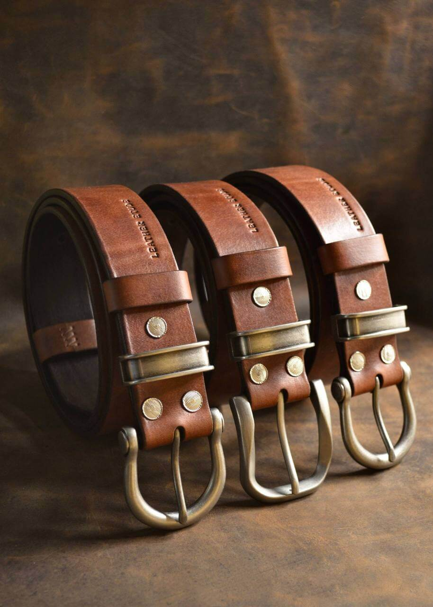
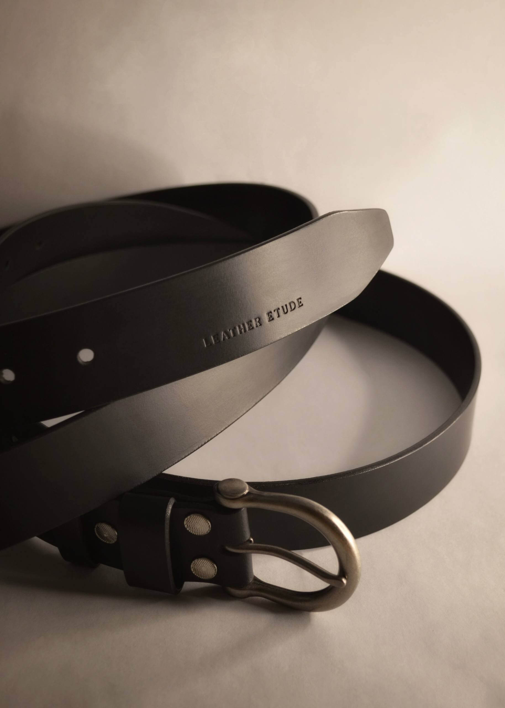
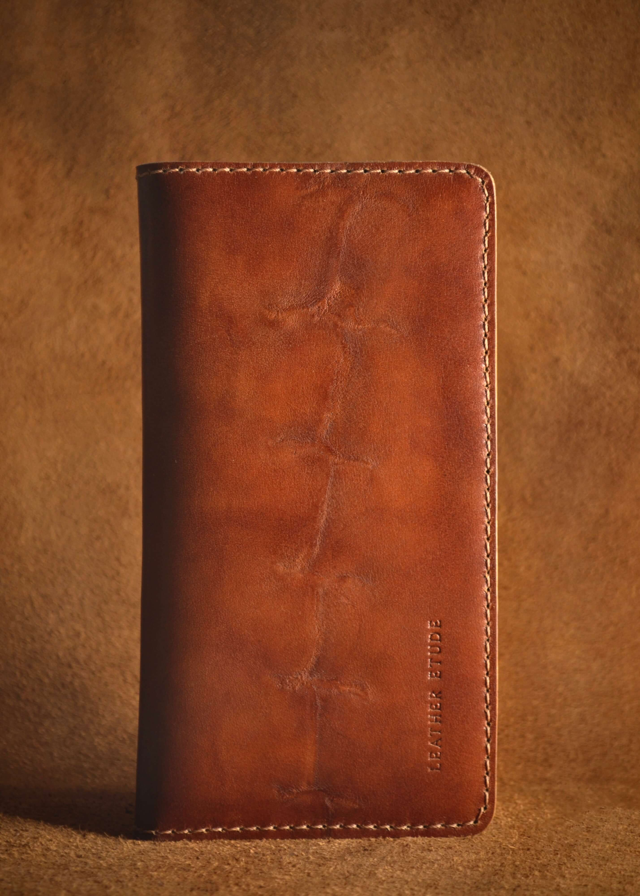
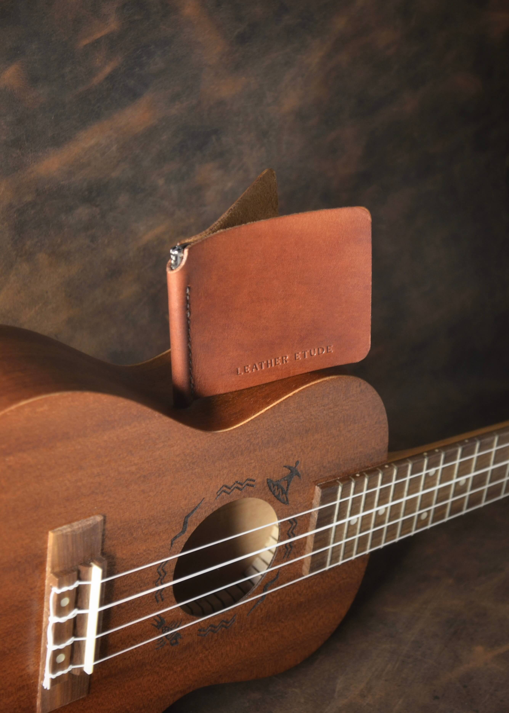
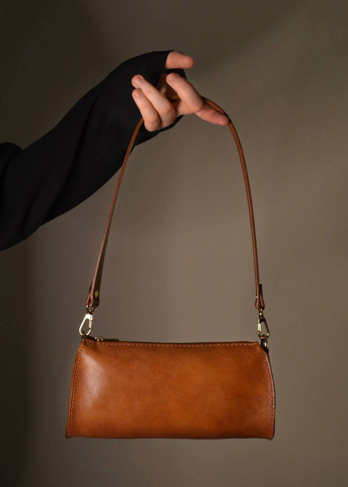
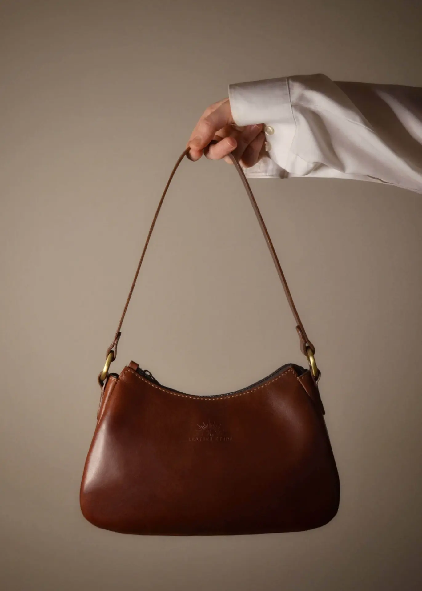
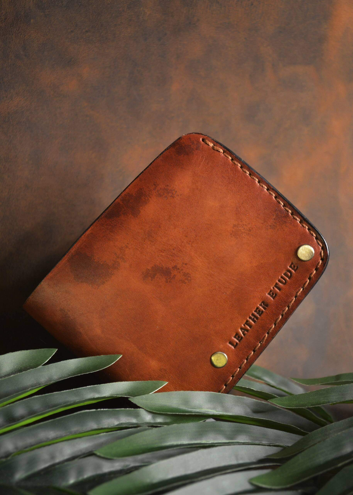
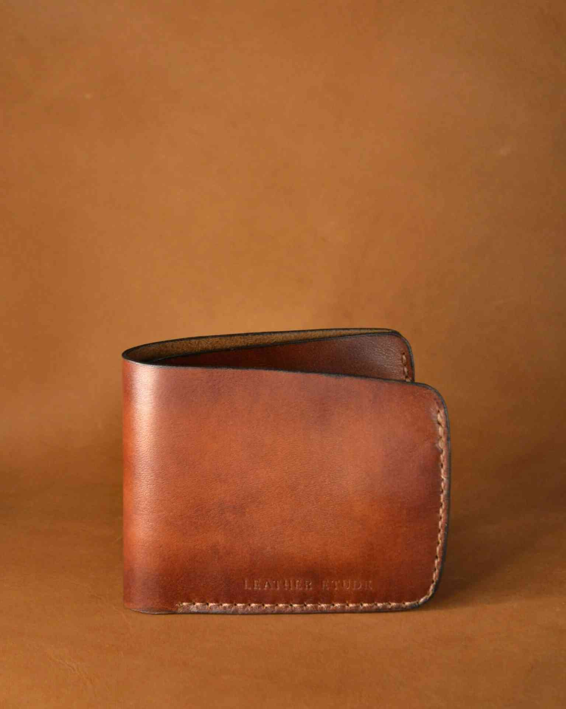

Tuotekatalogi
CLASSIC

CLASSIC – Klassinen kolmen niitin vyö sopii asuun kuin asuun ja kestää käyttöä. Vyöhön on painettu Leather Etude -logo, joka symboloi työpajan alkua.
NOIR

NOIR – Käsintehty vyö syvän mattamustan sävyisenä. Vyöllä on uniikki pyöristetty solki, joka antaa elegantin olemuksen vyölle. Vyön lopussa on painettuna Leather Etude -logo.
GULIVER

GULIVER – Käsintehty saksanpähkinän värinen passikotelo. Keskeinen yksityiskohta on nahan ainutlaatuinen luonnollinen kuviointi. Kuljeta dokumenttejasi mukana tyylikkäästi. Kotelossa on myös tilaa korteille sekä käteiselle rahalle.
NOTKA

NOTKA – Käsintehty lämpimän ruskean värinen korttikotelo, jossa yhdistyvät minimalismi ja funktionaalisuus. Tyylikäs tapa säilyttää korttisi järjestyksessä. Kompaktit kotelot sopivat hyvin pieniinkin taskuihin.
CARAMEL

CARAMEL – Käsintehty lämpimän karamellin sävyinen käsilaukku. Elegantti ja sievä ulkomuoto tekevät siitä sopivan kenen tahansa asusteeseen.
NOCTURNE BRUNE

NOCTURNE BRUNE – Käsintehty kastanjan sävyinen käsilaukku. Tämä vintage-tyylinen laukku komplementoi päivä- ja yölookkeja.
AMBER

AMBER – Käsintehty ruskea lompakko. Nahkassa on luonnollisesti syntyneitä kraatterimaisia kuvioita. Nahan tekstuuri sekä niitit antavat lompakolle uniikin ja rouhean ilmeen.
TERRA

TERRA – Käsintehty kaunis ja siro kullanruskea lompakko. Lompakon yksityiskohtina toimivat kauniit ompeleet. Ajaton tyyli ja funktionaalisuus tekevät lompakosta sopivan kaikille.